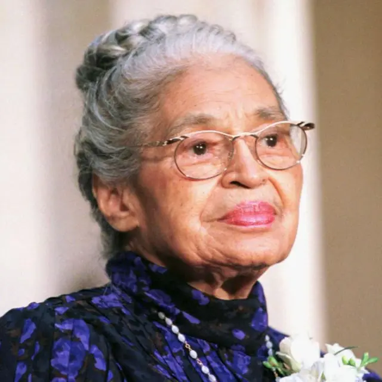

Rosa Parks
Conheça sua trajetória“Quando a mulher negra se movimenta, toda a estrutura da sociedade se movimenta com ela”
1907 - Magdalena Carmen Fridakahlo Calderón nasce em 6 de julho na Cidade do México;
1913 - aos 6 anos de idade contraiu poliomielite, doença que deixa sequelas em sua perna direita, motivo de chacotas;
1922 - ingressou na Escola Nacional Preparatória, onde teve o primeiro contato com ideais a frente seu tempo, impulsionados pela Revolução Mexicana;
1925 - sofreu um trágico acidente de ônibus, no qual fraturou vários ossos e a espinha dorsal. Em decorrência disso, ficou imobilizada por vários meses e durante esse período começou a pintar;
1929 - casou-se com o reconhecido artista Diego Rivera, o qual conheceu após frequentar círculos artísticos e sociais mexicanos;
1930 - 1933 - viveu com seu companheiro em diferentes cidades dos EUA. Durante esse período sofre seu primeiro aborto (1930) e o falecimento de sua mãe (1932);
1937 - junto a seu companheiro acolhe em sua casa o líder comunista Leon Trotsky e sua esposa, Natália. Frida além de uma intensa vida artística, foi uma grande ativista política e integrante do Partido Comunista Mexicano;
1938 - realizou a primeira exposição individual na Galeria Juelin Levy em Nova York;
1939 - integrou a exposição Mexique na Galeria Renon et Colle de Paris. Neste ano também se divorciou de seu companheiro. O relacionamento era bastante conflituoso, em especial, devido a infidelidade de Diego que desencadeou uma série de crises emocionais na artista;
1940 - casou-se novamente com Diego Rivera sob o acordo de vidas sexuais autônomas. Também integra as exposições Vinte Séculos de Arte Mexicana no Museu de Arte Moderna de Nova York e Internacional de Surrealistas da Galeria de Arte Mexicana Inés Amor;
A existência de Dandara é um dos maiores atos de resistência ao sistema escravocrata. Sua luta pela liberdade do povo negro foi extraordinária e inspira a todos/as no combate ao racismo.
Sua vida e luta são seus legados. Os mesmos são expoentes da luta antirracista, em especial o Feminismo Negro, ao qual também servem de exemplo de mulher negra protagonista de seu tempo.
Kleber Henrique. Dandara: A Face Feminina de Palmares. Portal Geledes.
2011. Disponível em:

Rosa Parks
Conheça sua trajetóriaRosa Parks
Conheça sua trajetóriaRosa Parks
Conheça sua trajetóriaRosa Parks
Conheça sua trajetória